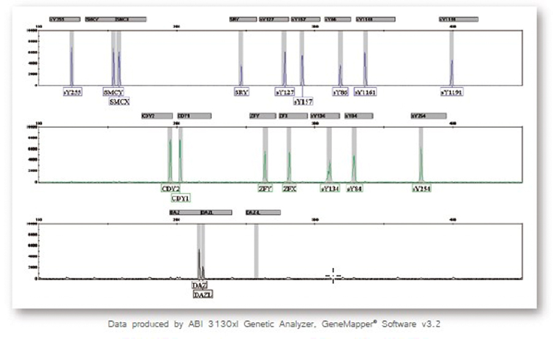

男性不育Y染色体微缺失检测
根据国际卫生组织调查数据，约15%育龄夫妇存在生育障碍，其中因男性因素引起的约占50%，在已知导致男性不育的遗传学因素中，发病率最高的两种是Y染色体微缺失和克氏综合症(Klinefelter’s syndrome, XXY)。Y染色体微缺失在无精症或少精症患者中约占10-15%，现已成为男性不育患者的常规检查项目。
产品特点
适用领域
精子库对精子进行遗传背景筛查
无精症、少精症患者病因排查
男性不育症患者选择体外受精(IVF)或单精子卵泡浆内注射(ICSI)生育前
男性不育伴隐睪和精索静脉曲张或其它原因不明的不育症患者病因排查
女性不明原因的习惯性流产病因排查
检测原理
Y染色体具有大量重复基因序列及回文结构，缺失率最高的三个影响精子发生的区域被命名为AZFa﹑AZFb和AZFc，它们之中任何一个出现缺失都有可能导致育性下降或不育。据此，2004年欧洲男科学协会和欧洲分子遗传实验室质控协作网(EAA/EMQN)发表"Y染色体微缺失分子诊断指导意见"，建议通过对各AZF区的共6个STS位点检测Y染色体微缺失。本试剂盒更增加可用于检测AZFb/c区部分缺失、复制及性染色体数目异常(如克氏综合症)的位点。
检测位点
检测平台
多重荧光PCR和毛细管电泳检测
对血液样本可直接进行扩增，免除DNA提取步骤，再利用一个多重定量荧光PCR扩增体系，以14对引物完成对16个位点的同时扩增；使用基因分析仪通过毛细管电泳对扩增产物进行检测，并利用专业软件进行结果分析。
检测流程
检测结果
正常男性检测结果示意图
样本类型
EDTA或枸橼酸钠抗凝血、口腔拭子
适用仪器
1. PCR仪
2. 基因分析仪(ABI PRISM® 310、3100 Genetic Analyzer或ABI 3130、3130xl、3500、3730、3730xl Genetic Analyzer)
Fertil Steril. 2002 May;77(5):873-82.、Fertil Steril. 2010 Jan;93(1):1-12.、Andrology. 2014 Jan;2(1):5-19.
※本资料仅供相关医学专业人士参考使用，试剂盒使用或注意事项详见说明书。